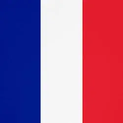

Language Experience
Languages I Currently Know
 I am a fluent speaker of (egyptian) Arabic, been speaking it since I was
a child. I think it's a very enjoyable language but I need to improve
writing and reading.
I am a fluent speaker of (egyptian) Arabic, been speaking it since I was
a child. I think it's a very enjoyable language but I need to improve
writing and reading.
I am a fluent speaker of English as well, since I'm born and raised in
America. It's alright, but not the most fun language.
I am learning Japanese at the moment, it's a very interesting language
but also very tough. I know about a hundred Kanji, but the grammar and
vocabulary is difficult and rewarding.
I am a very beginner french speaker, but I think it's a super fun
language to learn as well very fun to speak. I definitely want to invest
more time to learning this one soon.

Languages I Want to Learn
German
Chinese